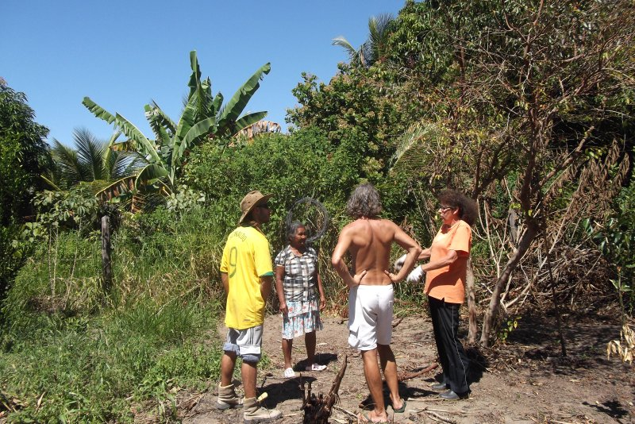

Por Regis Bailux

O que ele vai mudar?
A saúde física e mental das pessoas
Foi pensado para que ambiente ou local?
Foi pensado para o quintal da pajé Jassana na comunidade de Aldeia Velha Pataxó.
Ele é feito para quem?
Para todas pessoas que vivem em ecossistemas físicos e virtuais.